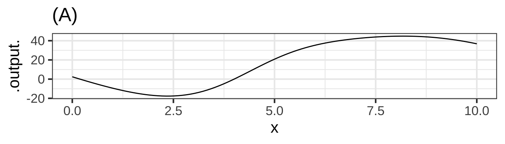
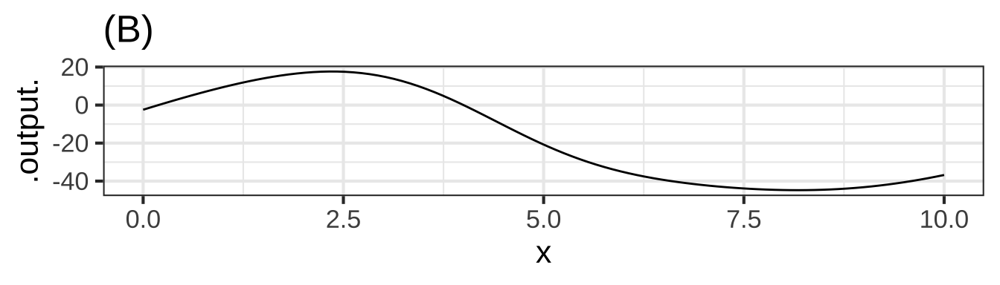
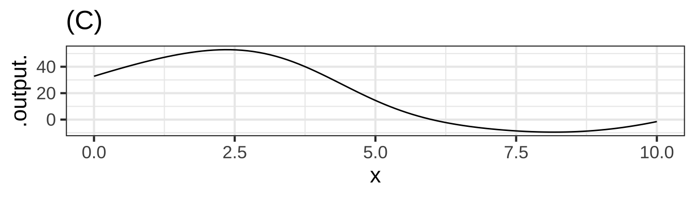
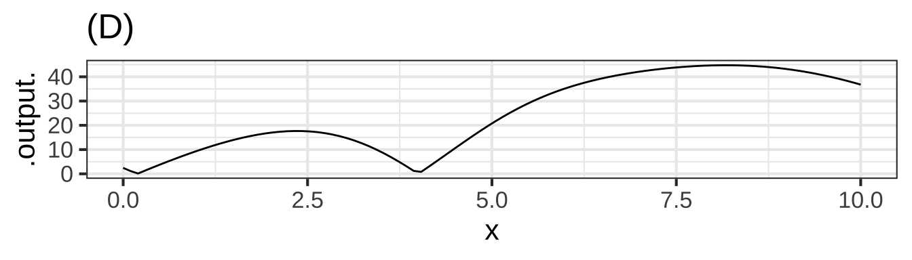

29 Integration
Sometimes it’s easier to think through matters when they are presented in a concrete, everyday context. Imagine that you managing a small-town water tank. Water flows in from the supply system and flows out to consumer demand. At any instant of time, there’s a net amount flowing to the tank, which could be measured in cubic-meters-per-second. (If the amount is negative, consumers are momentarily consuming more than is being newly supplied.)  3600
3600
The amount of water in the tank, measured in cubic meters, also fluctuates over time. We’re going to call the water in the tank your “stock” of water. As a water manager, you want to make sure that your stock never goes to zero. (Otherwise, the town’s citizens will be without water!) 3605
In terms of functions, the “flow” is \(f(t)\). The definite integral of the flow \[\int_a^b f(t) dt\] gives you some information about the stock: how much the amount of stock has changed from time \(a\) to time \(b\). This is not, however, exactly the same as the stock. Presumably, there was already some water in the tank at time \(a\), so the stock at time \(b\) will be that amount plus the amount of the definite integral of \(f(t)\). 3610
In this exercise, you are going to use the “Graph-antiD” web app which enables you to visualize the anti-derivative function in terms of areas. To use the app, click-drag-and-release to mark part of the domain of the function being displayed. 3615
Exercise XX.XX: CCwWGB
In this activity, you are going to use the “Graph-antiD” web app which enables you to visualize the anti-derivative function in terms of areas. To use the app, click-drag-and-release to mark part of the domain of the function being displayed.
Add a picture of the app and a link to it.
To answer these questions correctly, you must set the “Shape of function” box to 864.
Question A A. From the graph, roughly estimate \[\int_0^3 f(t)dt\] Choose the closest numerical value from the following. You could use either graph for this caclulation, but \(F(t)\) will be simpler algebra.
-46 ︎✘ -26 ✔︎ 0 ︎✘ F(t) has a net change over the interval 3 ︎✘ there is more stock at F(3) than F(0) 19 ︎✘ there is more stock at F(3) than F(0) 26 ︎✘ F(t) at the right end of the interval is lower than at the left end
Question B B. In order to construct the anti-derivative whose value at time \(t=-3\) will be zero, what constant of integration \(C\) should you add to the \(F(t)\) shown.
-120 ︎✘ Would adding this to F(-3) be equal to 0? -80 ✔︎ Would adding this to F(-3) be equal to 0? -50 ︎✘ Would adding this to F(-3) be equal to 0? 0 ︎✘ Would adding this to F(-3) be equal to 0? 50 ︎✘ Would adding this to F(-3) be equal to 0? 80 ︎✘ Are you sure you have the sign right? 120 ︎✘ Would adding this to F(-3) be equal to 0?
Question C C. Examining the stock at time \(t=0\), you observe that there are 40 units. Roughly how much stock will there be at \(t=5\)?
-25 ︎✘ Did you shift the curve in the right direction? -15 ︎✘ That would be the answer if there had been 0 units of stock at time \(t=0\). 0 ︎✘ Imagine F(t) being shifted by the difference of 40 and F(0) 15 ︎✘ Imagine F(t) being shifted by the difference of 40 and F(0) 25 ✔︎
Question D D. You start with a stock of 100 units at time \(t = -2\). At roughly what time \(t\) will the stock be half of this?
- -1.2 ︎✘ \(F(t)\)-\(F(a)\)=50, what is the value of a?
- -0.3 ✔︎
- 0.5 ︎✘ \(F(t)\)-\(F(a)\)=50, what is the value of a?
- 1.2 ︎✘ \(F(t)\)-\(F(a)\)=50, what is the value of a?
- 1.8 ︎✘ \(F(t)\)-\(F(a)\)=50, what is the value of a?
- The stock will never fall so low. ︎✘
Question E E. Your stock finally runs out at time \(t=2.5\). When did you have 120 units in stock?
-
\(t=-4\) ✔︎
-
\(t=-3\) ︎✘ This uses a similiar approach to the last question.
-
\(t=0\) ︎✘ This uses a similiar approach to the last question.
- There was never such a time. ︎✘
Question F F. After decreasing for a long time, the stock finally starts to increase from about \(t=2.5\) onward. What about \(f(t=2.5)\) tells you that \(F(t=2.5)\) is increasing?
- The derivative is at a minimum. ︎✘ Does this mean \(F(t)\) must be increasing?
- The derivative is negative ︎✘ Does this mean \(F(t)\) must be increasing?
- The derivative is near zero. ︎✘ Kind of. For the stock \(F(t)\) to increase, what has to be true of the derivative at that instant.
- The derivative becomes positive and stays positive. ✔︎
- The derivative is at a maximum. ︎✘ Does this mean \(F(t)\) must be increasing?
Question G G. Find the argmin \(t^\star\) of \(f(t)\) and note the sign of \(f(t^\star).\) What does this tell you about \(F(t^\star)\).
-
\(t^\star\) is also the argmin of \(F()\). ︎✘ look at the corresponding point on \(F(t)\).
-
\(F(t^\star)\) is decreasing at its steepest rate. ✔︎
-
\(F(t^\star)\) is increasing at it’s slowest rate. ︎✘ look at the corresponding point on \(F(t)\).
-
\(F(t^\star)\) is increasing at its steepest rate. ︎✘ look at the corresponding point on \(F(t)\).
- \(t^\star\) is the argmax of \(F()\) ︎✘ look at the corresponding point on \(F(t)\).
Question H H. What is the average flow into stock over the period \(-5 \leq t \leq 1\). (If the flow is outward from stock, that’s the same as a negative inward flow.)
-30 ︎✘ -20 ✔︎ 0 ︎✘ But you can see that the stock is diminishing steadily during \(-5 \leq t \leq 1\), so how could the average flow be zero. 10 ︎✘
Question I I. Which of the following is an interval when the average flow is approximately zero?
-
\(-1.3 \leq t \leq 1.1\) ︎✘ The area appears to be negative.
-
\(0.8 \leq t \leq 5\) ✔︎
-
\(-5 \leq t \leq 0\) ︎✘ The area appears to be negative.
- None of the above ︎✘
Question J J. From the graph, estimate \[\int_2^{-4} f(t)dt\] Choose the closest numerical value from the following.
- -120 ︎✘ Pay attention to the order of the limits of integration.
- -60 ︎✘
- 60 ︎✘
- 120 ✔︎
- None of these answers are close to being right. ︎✘
Exercise XX.XX: rk5PPK
Consider this function, \(f(t)\):

Assume that the “area” of each small box on the graph is the product of 1 Watt \(\times\) 1 second.
Question A What is \[\int_1^2 f(t) dt\ \mbox{?}\] (Choose the closest answer. The units are in Watt-seconds.)
-3.2 ✔︎ -1.4 ︎✘ Count the boxes in the interval 0 ︎✘ Count the boxes in the interval 2.5 ︎✘ Count the boxes in the interval 3.3 ︎✘ That’s a pretty good count of boxes, but still not the right answer. 6.1 ︎✘
\[\mbox{Let}\ \ A = \int_1^3 f(x) dx\ \ \ \mbox{and}\ \ \ B = \int_2^4 f(x) dx\]
Question B Which is bigger, A or B?
A ︎✘ B ✔︎ They are the same size ︎✘
\[\mbox{Let}\ \ A = \int_3^1 f(t) dt\ \ \ \mbox{and}\ \ \ B = \int_4^2 f(t) dt\]
Question C Which is bigger, A or B?
A ✔︎ B ︎✘ They are the same size ︎✘
Consider the function \[g(x) \equiv \int_4^x f(t) dt\] for the next three questions
Question D Which is bigger, \(g(8)\) or \(g(9)\)?
-
\(g(8)\) ✔︎
-
\(g(9)\) ︎✘ the interval from 8 to 9 decreases the total size
- They are the same size ︎✘
- Trick question! There can be no such function \(g(x)\) since \(f()\) is a function of \(t\) ︎✘ Try plugging in \(x=8\) on the right side of the definition and see if it makes sense.
Question E Is \(g(2.5)\) positive or negative?
positive ︎✘ The function being integrated, \(f(t)\), is positive over the interval \(2.5 \leq t \leq 4\). Since the lower limit \(t=4\) is larger than the upper limit \(t=2.5\), the \(\int_4^{2.5} f(t)dt\) is negative. zero ︎✘ negative ✔︎
Question F At what value of \(x\) is \(g(x) = 0\)?
2 ︎✘ There is still area under the curve for this interval 3 ︎✘ There is still area under the curve for this interval 4 ✔︎ When the two limits of integration are the same, the definite integral is always zero. 5 ︎✘ There is still area under the curve for this interval 6 ︎✘ There is still area under the curve for this interval 7 ︎✘ There is still area under the curve for this interval 8 ︎✘ There is still area under the curve for this interval
\[\mbox{Let}\ \ h(x) \equiv \int_0^x f(t) dt\]
Question G At what value of \(x\) is \(h(x) \approx 0\)?
1 ︎✘ consider when positive and negative areas are equal in magnitude. 2 ︎✘ consider when positive and negative areas are equal in magnitude. 3 ︎✘ consider when positive and negative areas are equal in magnitude. 4 ✔︎ 5 ︎✘ consider when positive and negative areas are equal in magnitude. 6 ︎✘ consider when positive and negative areas are equal in magnitude.
\(\partial_x h(x)\) is a function. When we write \(\partial_x h(3)\) we mean to evaluate that function for an input value of \(x=3\).
Question H Which is bigger, \(\partial_x h(3)\) or \(\partial_x h(4)\)?
-
\(\partial_x h(3)\) ︎✘ remember $f(t) is essentially the derivative of \(h(x)\) with respect to x.
-
\(\partial_x h(4)\) ✔︎
- Can’t tell. ︎✘
\[\mbox{Let}\ \ y(x) \equiv \int_4^x f(t) dt\]
Here are four different graphs.

Question I Which of the graphs shows \(y(x)\)?
A ✔︎ B ︎✘ Should it increase or decrease after the point crosses the x-axis? C ︎✘ Should it increase or decrease after the point crosses the x-axis? D ︎✘ When should the graph equal 0?Exercise XX.XX: DkoUjX
The following exercises are based on properties of definite integrals that were discussed in class and can be found on page 621 of the MMAC textbook.
Here are some definite integrals for which, without stating anything more about the function, we give you the numerical result.
| \(\int_{2}^{7} f(x) \,dx = -8\) | \(\int_{-6}^{-2} g(x) \,dx = 3\) |
| \(\int_{2}^{12} f(x) \,dx = -14\) | \(\int_{0}^{2} g(x) \,dx = 1\) |
| \(\int_{2}^{7} h(x) \,dx = 5\) | \(\int_{0}^{2} h(x) \,dx = 6\) |
Use the above information to answer the multiple-choice questions below.
Question A \(\int_{2}^{7} 3f(x) \,dx =\)
-8 ︎✘ Did you see the three? -42 ︎✘ Check the bounds -24 ✔︎ 13 ︎✘
Question B \(\int_{7}^{12} f(x) \,dx =\)
6 ︎✘ Be careful with your signs 22 ︎✘ Be careful with your signs -6 ✔︎ -22 ︎✘ Be careful with your signs
Question C \(\int_{2}^{7} f(x) + g(x) \,dx =\)
- -3 ︎✘ Do you know $_{2}^{7} g(x) ,dx $?
- 8 ︎✘ Do you know $_{2}^{7} g(x) ,dx $?
- -8 ︎✘ Do you know $_{2}^{7} g(x) ,dx $?
- insufficient information to answer question ✔︎
Question D \(\int_{2}^{2} r(x) \,dx =\)
- -3 ︎✘ Look at the bounds
- 0 ✔︎ Even though you don’t know \(r(x)\) this is always true when the bounds are the same
- -8 ︎✘ Look at the bounds
- insufficient information to answer question at t ︎✘ Look at the bounds
Question E \(\int_{-6}^{-2} g(x)+3 \,dx =\)
6 ︎✘ You need to integrate the 3 15 ✔︎ 12 ︎✘ Don’t forget g(x) 3 ︎✘ Break it up into two different integrals
Question F \(\int_{12}^{7} f(x) \,dx =\)
-6 ︎✘ Be careful with your signs 22 ︎✘ Be careful with your signs 6 ✔︎ -22 ︎✘ Be careful with your signs
29.1 Fundamental theorem of calculus
Exercise XX.XX: LCKEs
The equation below shows three items, all of which are equivalent even though they look different. You can see this from the equal signs separating the three items.
\[\huge \int_\color{tan}{a}^\color{tan}{b} \color{red}{f(x)} dx = \color{blue}{F(x)}\left.\right|_\color{tan}{a}^\color{tan}{b} = \color{blue}{F(\color{tan}{b})} -\color{blue}{F(\color{tan}{a})}\] When you reach the point where you can say, “That’s obvious,” and can write down the three items from memory, you will have achieved an important facility with calculus.
Question A Since the three items are equivalent, they are all the same kind of “thing.” What kind of thing are they?
- a number ✔︎ Another term for this is definite integral. Evaluating an anti-derivative at two values of \(x\) and subtracting one from the other gives a number. (Remember, in our notation, \(a\) and \(b\) stand for numerical constants, unless we specifically say otherwise.)
- a function of \(x\) ︎✘ Each of the items include something that is a function of \(x\), but the entire item is not itself a function of \(x\).
- an interval ︎✘ Each of the items includes an interval, but the entire item is not one.
- a limit of integration ︎✘ Each of the items includes a limit of integration, but the entire item is not one.
- an anti-derivative ︎✘ There is an anti-derivative involved in each item, but the entire item is not one.
- a constant of integration ︎✘ No constant of integration is needed to express any of the items
The equation has been written in color to help you identify elements that are the same in each of the three items.
Question B Which of the colors stands for a limit of integration?
black ︎✘ dodgerblue ︎✘ tan ✔︎ orange3 ︎✘
Question C Which of the colors stands for the derivative of a function that appears elsewhere in the equation?
black ︎✘ dodgerblue ︎✘ tan ︎✘ orange3 ✔︎
Question D Which of the colors stands for an anti-derivative of a function that appears elsewhere in the equation?
black ︎✘ dodgerblue ✔︎ tan ︎✘ orange3 ︎✘Exercise XX.XX: KLJRK
Famously, the acceleration due to gravity at the Earth’s surface is a constant: roughly -9.8 meters / sec\(^2\). But let’s write it as a function of time: \[\mbox{accel}(t) \equiv -9.8\] Galileo climbs up to the top of the Tower of Pisa, 56.7 meters above the ground. He is holding a small lead ball between thumb and forefinger. He spreads his fingers and the ball starts to fall from a standstill. How fast will the ball be going as it falls.
In this problem, we’re given information in the form of acceleration, and want to turn it into a statement about velocity. Remembering that acceleration is the derivative of velocity with respect to time, we see this as an anti-derivative problem: \[\mbox{vel}(t) \equiv \int \mbox{accel}(t) dt = \int -9.8 dt = -\int 9.8 dt\\\mbox{vel}(t) = -9.8 t + C\ .\]
Question A Imagine that the time of release was \(t=3\) seconds. Remembering that 9.8 is in meters/sec\(^2\), what is the value of \(C\) in the velocity function?
- 29.4 meters per sec\(^2\) ︎✘ Sorry, but \(C\) has dimension of velocity.
- 29.4 meters per sec ✔︎ Right. At time \(t=3\) the ball was at a standstill, meaning velocity zero. So \(-9.8 \times 3 + C = 0\)
- 29.4 meters ︎✘
- 29.4 dimensionless/unitless ︎✘
Where will the ball be in 2 seconds after release (that is, at 5 seconds)? “Where” is a position question, so we need to convert the original information that we had in terms of acceleration into information in terms of position.
We’ve already used the relationship between acceleration and velocity (acceleration is \(\partial_t\) accel(t)) to compute the velocity vel(t) at any time: vel(t) \(= -9.8 t + 29.4\) and we know the units of \(t\), \(-9.8\) and \(29.4\).
Since velocity is the derivative of position with respect to time, we can compute position as the anti-derivative of velocity: \[\mbox{pos}(t) = \int \mbox{vel}(t) = \int (29.4-9.8 t) dt\\\mbox{pos}(t) = 29.4 t - 9.8 \frac{t^2}{2} + C_{pos}\] Another \(C\)! We’re writing it as \(C_{pos}\) to remind us that this \(C\) is different than the \(C\) that appeared in the vel(t) function. That \(C\) was from the accumulation of acceleration to get velocity. This \(C_{pos}\), even though it’s the same letter, is something different. Remember that \(C_{pos}\) is a reminder that pos(t) is the accumulation of velocity up until time \(t\), but we haven’t (yet) specified when the accumulation started. To calculate the \(C_{pos}\) for the pos(t) function, we need to consider the problem situation (Galileo in Pisa) and figure out some \(t_0\) for which we know \(pos(t_0)\).
What we know here is that at the release time (\(t=3\) seconds) the ball was at the top of the Tower of Pisa. So dist(3) = 56.7 meters.
Question B What’s the value of \(C_{pos}\) in the distance function given that dist(3) = 56.7 meters?
-
\(C = 56.7 - 29.4 \times 3 + 9.8 \times 3^2 / 2 = 12.6\) meters ✔︎
-
\(C = -29.4 \times 3 + 9.8 \times 3^2 / 2 = 44.1\) meters ︎✘ to solve for C you always need the equation AND a single point
-
\(C = 56.7\) meters ︎✘ C is not always equal to the intital value, rember the release is at t=3
-
\(C = 0\) meters ︎✘
- A quantity not in meters. ︎✘ Since pos(t) is in meters, the \(C\) must also be in meters. Look at the formula for pos(t)!
Question C What is the position of the ball two seconds after release? (The units for each of these is “meters” above the ground.)
-
\(29.4 \times 2 - 9.8 \times 4/2 + 12.6\) ︎✘ Two seconds after release (which occurs at \(t=3\)) is what value of \(t\)?
-
\(29.4 \times 5 - 9.8 \times 5^2/2 + 12.6\) ✔︎
- \(29.4 - 9.8 \times 5 / 2 + 12.6\) ︎✘ Check the formula for pos(t) to make sure where the t appears.
Exercise XX.XX: gDSeX
Remember our conventions for notation:
- Numerical constants (perhaps with units)
- Symbols: e.g. \(a\), \(b\), \(c\), \(x_0\), \(t^{\star}\)
- Examples: 3.2, 4.8 meters, 17 feet/sec\(^2\)
- Quantities that can vary (perhaps with units)
- Symbols: e.g. \(x\), \(t\), \(y\), \(u\), \(v\)
- Examples: position, time, velocity
- Functions of a variable
- Symbols: e.g. \(f(x)\), \(g(t)\), \(h(x, t)\)
- Examples: position as a function of time, density as a function of position
- Functions evaluated at a specific numerical input
- Symbols: e.g. \(f(a)\), \(g(t_0)\), \(h(x^{\star}, t^{\star})\)
- Examples: velocity at the finish line, starting position
In particular, take care to distinguish between these two kinds of symbolic items:
- \(f(x)\), \(f()\) as a function of \(x\)
- \(f(x_0)\), the function \(f()\) evaluated at the specific input \(x_0\), producing (typically) a quantity like 3.5 meters/sec.
A major source of confusion for students is that \(a\) is a constant, even though we are not yet saying specifically which numerical value that constant has. Think of \(a\) as meaning “insert constant here.” In terms of derivatives …
- \(\partial_x f(a) = 0\)
- \(\partial_x f(x)\) is a function
- \(\partial_u f(x) = 0\), since \(u\) and \(x\) are different variables.
- \(\partial_u f(u)\) is a function, the exact same function as in (ii).
With this in mind, turn to our three perspectives on a definite integral \[\int_a^b f(x) dx \ \ =\ \ \left. F(x) \right|_a^b\ \ =\ \ F(b) - F(a)\]
- \(a\) and \(b\) are numerical constants -\(f(x)\) and \(F(x)\) are functions of \(x\) -\(F(a)\) is the function \(F()\) evaluated at the specific input \(a\), producing a quantity. Likewise \(F(b)\).
Question A What kind of a thing is \(F(u)\), according to our notation convention?
- a number ︎✘ Is \(u\) a number in our notation?
- a function of \(x\) ︎✘ Close, but not \(x\).
- a function of \(u\) ✔︎
- a definite integral ︎✘ A definite integral would be something like \(\int_a^b f(x) dx\) or \(\left. F(x) \right|_a^b\) or \(F(b) - F(a)\).
Question B What kind of a thing is \(F(a)\), according to our notation convention?
- a number ✔︎ We’re evaluating \(F()\) at a specific numerical value of the input, namely \(a\).
- a function of \(x\) ︎✘ A function always has one or more variables as input. \(a\) is not a variable but a numerical constant.
- a function of \(u\) ︎✘ A function always has one or more variables as input. \(a\) is not a variable but a numerical constant.
- a definite integral ︎✘ A definite integral would be something like \(\int_a^b f(x) dx\) or \(\left. F(x) \right|_a^b\) or \(F(b) - F(a)\).
Question C What kind of a thing is \(F(u) - F(a)\), according to our notation convention?
- a number ︎✘ Is \(u\) a number in our notation?
- a function of \(x\) ︎✘ Close, but not \(x\).
- a function of \(u\) ✔︎ Since \(F(u)\) is a function of \(u\), and \(F(a)\) is a constant, \(F(u) - F(a)\) is a function of \(u\) minus a constant, or, in other words, a function of \(u\).
- a definite integral ︎✘ A definite integral would be something like \(\int_a^b f(x) dx\) or \(\left. F(x) \right|_a^b\) or \(F(b) - F(a)\).
Question D According to our notation convention, what kind of a thing is \[\int_a^u f(x) dx \mbox{?}\],
- a number ︎✘
- a function of both x and u ︎✘
- a function of \(x\) ︎✘ Close, but not \(x\).
- a function of \(u\) ✔︎ You can see this by referring to the three perspectives equation. \[\int_a^u f(x)dx = F(u) - F(a)\] which is a function of \(u\).
- a definite integral ︎✘ Certainly it looks a lot like a definite integral. But \(u\) is a variable, not a constant.
Question E According to our notation convention, what kind of a thing is \[\int_u^b f(x) dx \mbox{?}\],
- a number ︎✘
- a function of both x and u ︎✘
- a function of \(x\) ︎✘ Close, but not \(x\).
- a function of \(u\) ✔︎ You can see this by referring to the three perspectives equation. \[\int_u^b f(x)dx = F(b) - F(u)\] which is a function of \(u\).
- a definite integral ︎✘ Certainly it looks a lot like a definite integral. But \(u\) is a variable, not a constant.
Question F According to our notation convention, what kind of a thing is \[\int_u^x f(x) dx \mbox{?}\],
- a number ︎✘
- a function of both x and u ✔︎ You can see this by referring to the three perspectives equation. \[\int_u^x f(x)dx = F(x) - F(u)\] which is a function of both \(x\) and \(u\).
- a function of \(x\) ︎✘
- a function of \(u\) ︎✘
- a definite integral ︎✘ Certainly it looks a lot like a definite integral. But \(x\) and \(u\) are variables, not constants.
Now turn to the entities involved in the so-called “First Fundamental Theorem of Calculus.” (“Fundamental theorem” is a highfalutin way of saying something like, “This isn’t obvious at first glance, and so you should be especially careful to memorize it so that you identify it when you see it.” Another way to state it is, “Every function is the derivative of some anti-derivative.” But you knew that already, since “every function has an anti-derivative.”)
Here are the entities involved, which you’ll recognize as a slight modification of an earlier statement:
\[\partial_u \int_a^u f(x)dx \ \ =\ \ \partial_u \left. F(x) \right|_a^u \ \ = \ \ \partial_u \left(F(u) - F(a)\right) .\] Let’s look at the right-most expression \(\partial_u \left(F(u) + F(a)\right)\) and exploit the the derivative of a sum is the sum of the derivatives. So … \[\partial_u \left(F(u) + F(a)\right) = \partial_u F(u) - \partial_u F(a) = \partial_u F(u)\]
Question G Which of the following correctly justifies the step \[\partial_u F(u) - \partial_u F(a) = \partial_u F(u)\ \mbox{?}\]
-
\(F(a)\) is a constant ✔︎ And the derivative of a constant is always 0.
-
\(F()\) is an anti-derivative. ︎✘
-
\(F(b)\) does not appear. ︎✘
- \(F(u) = \int f(x) dx\) ︎✘
Taking the left-most and right-most expressions in the above equation, we have \[\partial_u \int_a^u f(x) dx = \partial_u F(u)\]
Question H Is there an algebraic simplification of \(\partial_u F(u)\)?
- No, because it depends on what \(F(u)\) is. ︎✘ But we know what \(F(u)\) is: the anti-derivative of \(f(u)\).
- Yes, because \(\partial_u F(u)\) is simply \(f(u)\). ✔︎
- No, because we could just as easily have written \(\partial_x F(x)\) ︎✘
- Yes, because it is the same thing as \(\partial_x F(x)\) ︎✘